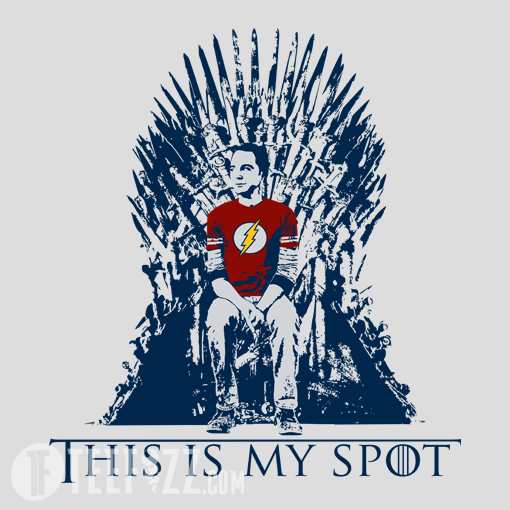

Nói chung là quả nhân đã tính cưỡi hạc về trời mà thấy @Quạ Chúa nhiệt tình quá thì cũng đành đặng tiếp chuyện. Quả nhân có thói quen người nào nói chuyện cách nào thì đối đãi theo cách tương tự. Cái này nó khác với hướng nội. Thì có suy nghĩ mà không chia sẻ ra được, cần hiểu đúng nghĩa theo từng chữ. Lý do thì do suy nghĩ đó còn mơ hồ, hoặc khó giải thích. Đơn giản chỉ như vậy. Mà Ne thì suy nghĩ không ít, tính tỷ lệ chia sẻ được so với không chia sẻ được thì đủ thấy là không nhiều rồi. Bảo thủ thì không có nghĩa là không biết sáng tạo. Mà có khi biết rồi vẫn chọn cách dễ làm nhất. Như trong tranh luận có những người vẫn hiểu quan điểm đối lập nhưng luôn giữ vững lập trường bất kể đúng sai. Nói thêm thì, Ne trong cuộc sống, tùy theo góc nhìn. Cơ mà có một đặc điểm tui hay nhìn nhận là "không biết cách" hoặc "chưa biết cách". Như kiểu Edition thử 1000 loại sợi kể cả sợi tóc để tìm ra dây tóc, nhiều người coi là kiên nhẫn, mày mò, sáng tạo, cơ mà tui thấy thì đó là "không biết cách". Nó có nhiều thứ mà Ne-dom "không biết cách" lắm, vậy nên loại này mới được coi là child-like. Cái việc nghĩ ra Ne ra nhiều khả năng cũng vậy, giống như kiểu bạn đi từ Hồ Gươm ra Nội Bài. Bạn đi hết mie nó cả Hà Nội xong mới ra được sân bay. Rồi trên đường còn va đủ chuyện trên đời, chung quy vẫn là "không biết cách" hoặc "chưa biết cách". Loại người này nói lạc quan thì phải lạc quan chứ, nó đi hết cả cái bản đồ mà không lạc quan thì làm gì có động lực để đi hết như vậy. Chứ không phải do có cách nhìn lạc quan về cuộc sống, hay lạc quan về tương lai. Nếu nhìn vào thái độ đó mà nghĩ sự việc hay mọi thứ tốt lên thì sẽ rất dễ bị cuốn theo. Cái này là bị buộc phải lạc quan. Ở góc độ của tui mà nói thì tui thấy như vậy chưa hay, chưa sáng tạo. Sáng tạo là phải đi sao đến tận Tân Sơn Nhất rồi đáp chuyến bay đến Nội Bài kia. (Just kidding). Cơ mà về cơ bản nó chỉ có 1 chiến thuật là "vét cạn". Khi Ti phát triển nó tăng tốc độ "vét cạn" nhanh hơn, như kiểu google tìm kiếm nhanh như chớp ấy. Với thực ra nó chỉ đa dạng về cách thức, chứ cách judge sự việc lại rất bảo thủ. Cái này hơi khó giải thích, nhưng mà nó không thông thoáng đâu. Chắc do lỡ tốn nhiều năng lượng cho cách thức nên dụng ý bên trong không được linh hoạt. Cách đối đãi với con người của Ne Ti thì nó tóm gọn trong câu "Nếu bạn làm bạn với tất cả mọi người thì bạn không làm bạn với ai cả". Cái này nó có gây trở ngại đôi chút trong những mối quan hệ thân thiết. Lan man thêm chút thì Ne Ti có kinh nghiệm trong việc xử lý những tình huống "không biết cách", do bản chất và có thói quen tạo ra những tình huống như vậy. Nên haizz.... nói vậy chắc đủ thấy bản chất cũng có gì thú vị đâu. Thật ra có rất nhiều lĩnh vực mà những đặc tính trên có lợi, đặc biệt nhất là ngoại giao, nhà báo... Nhìn chung Ne Ti không cool, sáng tạo như vẻ bề ngoài, và đôi khi cũng là cá nhân rất chăm chỉ, không hề lười biếng và rất nhẫn nại đơn giản do cứ phải thử liên tục. Quan điểm của tui là vậy. P.S: À còn cái vụ tĩnh lặng gì đấy là chém gió thôi. Nếu chuyển đổi ý đó sang thông tin thì như kiểu phải quét cả 1 bản đồ thì những con đường nó vắng vẻ yên tĩnh sẽ quét được nhanh hơn, và càng tránh lặp lại, lòng vòng, thì càng nhanh đến kết quả. Đó là lý do tui không thích bắt ếch.
Chuẩn này. Like cho câu trên. Lại một kiểu ảnh hưởng của người nổi tiếng đến popular culture. Không biết nguồn gốc của mấy bài viết về danh nhân dạng vậy ở đâu. Nhưng nếu lấy ví dụ cho sự kiên nhẫn mày mò, ko nản chí mà dùng hình ảnh edison đi thử 1000 loại sợi mới biết dc sợi nào thì hơi bị failed. Vấn đề ko thuộc dạng trial n error mà đi áp dụng như vậy có hơi dại, trong khi nếu biết thành phần cấu tạo của sợi+áp dụng công thức sẽ tiết kiệm sức hơn nhiều. Ngoài ra trong xã hội còn có tuyên tuyền sai lệch như kiểu edison là đại diện cho giới sáng chế và bóng đèn điện. Nhưng ông chỉ là người sáng lập công ty và thu mua bản quyền sáng chế từ người khác. Hầu hết thành quả trực tiếp từ công ty Edison là một đống kỹ sư thợ điện khác dưới quyền làm ra, trong đó phải kể đến Tesla.
Thấy các bạn bắt đầu có mùi nghiêm túc, đổi giọng thành nghiêm túc chút vậy. :v Đặc điểm của ENTP có hai thái cực, đồng thời cũng có nhiều level, giống như xoáy trôn ốc. 1. Nhiều level: Type nào cũng có thằng giỏi, thằng dốt; có thằng phát triển, có thằng chưa phát triển. Cùng một bộ function Ne Ti nhưng biểu hiện ở một nhà bác học khác hoàn toàn so với một người thiếu hiểu biết và ít dùng trí óc. VD1: Lấy ví dụ về Ne Ti hơi khó, lấy về một kỹ năng trực quan cho dễ hiểu. Kỹ năng đọc của thằng mới thi xong học kỳ 2 lớp 1 sẽ khác so với kỹ năng đọc của thằng lớp 12 chuẩn bị thi đại học. Kỹ năng viết của trẻ trâu sẽ khác so với kỹ năng viết của các anh hùng bàn phím lão luyện. Kỹ năng kể chuyện của người mới bị bắt xe lần đầu sẽ khác với kỹ năng kể chuyện của thằng nghiện lâu năm. VD2: --> Level thấp --> Level cao --> Đây là một ví dụ điển hình phân cấp level. Cái này hay. 2. Hai thái cực: Thứ gì cũng có mặt tiêu cực và tích cực. Mỗi đẳng cấp lại tồn tại song song hai thái cực. 2.1. Khắc phục theo kiểu lên level Mỗi level đều có cái tiêu cực --> Con người tìm cách khắc phục --> Lên level + Phát sinh tiêu cực mới --> Tìm cách khắc phục --> Nó sẽ lên dần đều và trở thành vòng xoáy trôn ốc. Chúng nó cứ liên tục bật lại nhau như một cuộc tranh luận 2.2. Khắc phục theo kiểu biến yếu thành mạnh Ở cùng 1 đẳng cấp, vẫn có thể kìm chế điểm yếu bằng cách thích nghi. Vì một đặc điểm có thể là ưu điểm trên khía cạnh này, nhưng lại là điểm mạnh trên khía cạnh khác. VD: Trải nghiệm cá nhân liệt 5 giác quan + Liệt khứu giác: Ở đâu cũng được, không gian thế nào cũng được, không quan tâm nó bí hay có mùi gì, mà nhiều lúc không biết luôn. + Liệt vị giác: Ăn cái gì cũng ngon na ná nhau. + Liệt thính giác: Để người khác gọi mấy lần mới nghe thấy (đã đi khám và may quá không bị điếc) + Liệt xúc giác: Hầu như chưa cảm thấy nóng bao giờ và hiếm khi thấy đau --> người con gái Việt Nam tiêu biểu với làn da trơ lì (đến nỗi từng được đặt lên bàn cân cùng sắt, thép, cá và đồng bởi nhiều nhà thơ và ông Chu Xuân Phàm). + Thị giác không nhạy bén: Nhiều lúc không nhìn thấy những thứ hiện hữu ngay trước mắt, dù thị lực lúc đeo kính là 10/10. Đây là Yếu hay Mạnh? Tôi nghĩ là CẢ HAI: - Yếu: Dễ bị tai nạn,... - Mạnh: Dễ sống, dễ nuôi,...(Thật ra yếu mạnh ghi chi tiết ra thì dài, mà lười lắm, thôi mọi người chịu khó tự hiểu nhé :v) Con người sẽ kết hợp cả 2 cách khắc phục 1.1 và 1.2 và nên kết hợp để bản thân vừa phát triển sâu, vừa phát triển rộng. Ví dụ 1 vài cách khắc phục cho yếu điểm trên: - Kiểu 2.1: Luyện tập các giác quan cho nhạy bén hơn. Vì phải sống để còn khám phá tiếp. Tự thuyết phục mình: xung quanh có nhiều thứ hay ho, phải để ý và dùng Ne tìm ý tưởng mới. - Kiểu 2.2: Dùng Ne Ti sáng chế ra cái gì đó giúp loại trừ các nguy cơ tai nạn. Để phòng trừ trường hợp tai nạn xảy ra trước khi các chế thành công, hãy tìm 1 thằng partner có Se và Fe mạnh hơn để nó nuôi mình, nhớ tận dụng yếu tố "dễ nuôi" để dụ nó Viết dài quá. Tóm lại là cái gì cũng có hai mặt, ghi là điểm yếu nó chỉ tương đối mà thôi.
Trẫm mới đi vi hành vài hôm mà thiên hạ đã đại loạn thế này rồi à P/s: Nên tính thêm điểm yếu của những trường hợp ENTP unhealthy giống @Nobunaga nữa.
Thời nay là thời hiện đại, cho dù có mỗi người tự may riêng cái long bào, ngồi trên ngai vàng, cũng chẳng vi phạm cái phép tắc nào cả. Các ái khanh thích thì tự lập topic riêng mà xưng vương nhé. Hạ bệ người khác không làm bản thân cao giá hơn được đâu. Nó chỉ cho thấy các ái khanh thiếu đi khả năng trong việc đánh giá bản thân mà thôi. Quả nhân tự thấy mình nói chuyện đúng định hướng đúng trọng tâm, không chút thiên lệch, lại thụ mệnh trời giáo huấn các ái khánh. Ái khanh nào thích ngoa ngôn các vấn đề riêng tư thì tự lập topic riêng nhé. Các ENTP khác có muốn tranh quyền đoạt vị thì cứ chủ động đưa ra nhận xét, ý kiến nào hay, sáng suốt, quả nhân sẵn sàng thoái vị nhượng hiền. 